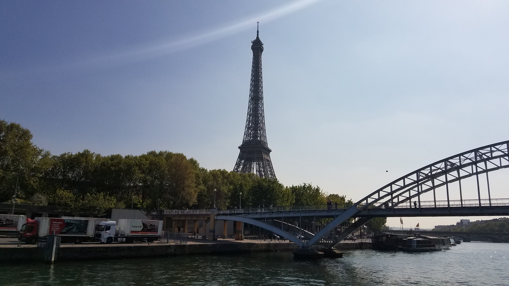
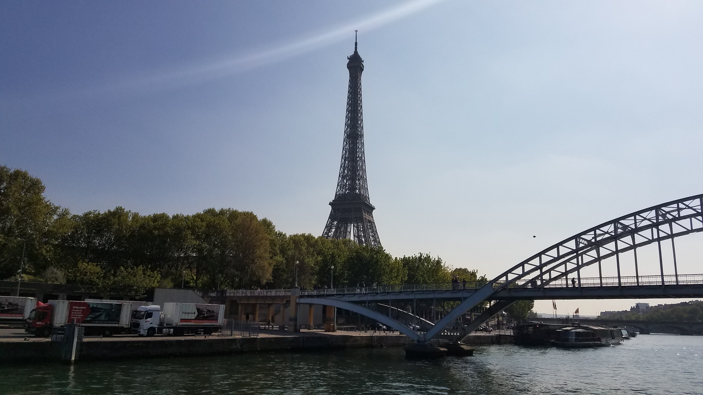

I have been very fortunate to be able to travel to various places in my lifetime. Travel is one of my favorite things to do. I love gaining a new perspective of the world, and experiencing new cultures.
Here is a list of places that I have traveled to so far:
- Quebec City,
Toronto, Montreal,
San Francisco,
Washington DC,
New York City,
London, Paris,
Normandie France,
Amsterdam
Last year I was able to travel in a school group to San Francisco in November, which was amazing. In April, I got to travel to England, and then take a ferry to explore Normandie France, as well as Paris. We then took a train to Amsterdam which was super awesome and such a vibrant city. Below are a few pictures from the Europe trip.
 
